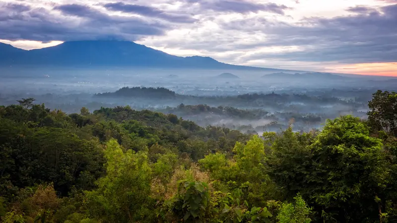
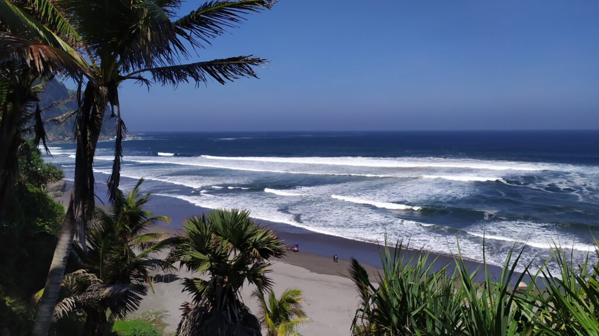
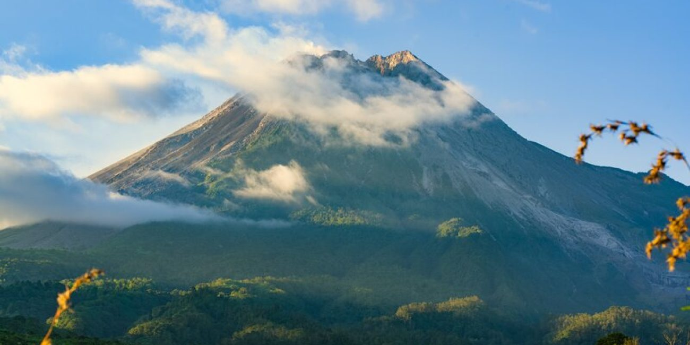

Asal-usul nama Yogyakarta sering dikaitkan dengan kisah perjalanan
spiritual Raja Keraton Mataram, Sultan Hamengkubuwono I. Konon, saat
mencari tempat yang dianggap suci dan berkah untuk mendirikan
kerajaan baru, sang sultan sempat singgah di sebuah lembah yang
dikelilingi perbukitan. Di tempat ini, dia mendapatkan kedamaian
batin dan petunjuk ilahi untuk membangun sebuah kota. Sultan
kemudian menamai tempat itu Yogyakarta karena sangat terkesan dengan
kedamaian dan ketenangan yang dirasakan. Nama itu berasal dari kata
"tempat yang layak untuk dipimpin atau diperintah". Menurut cerita
lain, nama Yogyakarta juga merujuk pada lokasinya yang strategis dan
subur di antara dua sungai besar.
Nama Yogyakarta memiliki banyak arti dalam filosofi Jawa. Nama ini
dikaitkan dengan gagasan bahwa manusia dan alam semesta terkait satu
sama lain, menurut beberapa ahli budaya dan sejarah. "Ngayogyakarta"
adalah istilah sakral yang berarti "mengayomi atau melindungi
kesejahteraan", "Ngayogya" berarti melindungi dan memelihara, dan
"karta" berarti kesejahteraan atau kemakmuran. Oleh karena itu,
Yogyakarta dapat dianggap sebagai tempat yang aman untuk
kesejahteraan.
Geografis

Geografis
Kota Yogyakarta terletak di bagian selatan Pulau Jawa, sebagian
besar dikelilingi oleh pegunungan. Geografis, Yogyakarta berada di
ketinggian sekitar 120 meter di atas permukaan laut, dengan beberapa
wilayah di sekitarnya yang lebih tinggi. Gunung Merapi di utara,
misalnya, menjulang hingga 2.930 meter di atas permukaan laut. Dua
aliran sungai utama di daerah ini, Sungai Gajah Wong dan Sungai
Progo, memberikan kontribusi yang signifikan terhadap keragaman
topografi dan sistem hidrologi kota.
Kota Yogyakarta terletak di bagian selatan Pulau Jawa, sebagian
besar dikelilingi oleh pegunungan. Geografis, Yogyakarta berada di
ketinggian sekitar 120 meter di atas permukaan laut, dengan beberapa
wilayah di sekitarnya yang lebih tinggi. Gunung Merapi di utara,
misalnya, menjulang hingga 2.930 meter di atas permukaan laut. Dua
aliran sungai utama di daerah ini, Sungai Gajah Wong dan Sungai
Progo, memberikan kontribusi yang signifikan terhadap keragaman
topografi dan sistem hidrologi kota.
Wisata
Yogyakarta menawarkan kombinasi keindahan alam yang memukau dengan
banyak tempat untuk dilihat, termasuk pantai yang indah dan
gunung-gunung yang megah. Pantai Parangtritis adalah salah satu dari
banyak pantai selatan Yogyakarta yang memiliki pesona laut yang
luas, dan ombak yang menawan. Ini adalah tempat yang bagus untuk
bersantai dan menikmati matahari terbenam. Sisi utara Gunung Merapi
menawarkan pemandangan alam yang menakjubkan. Keberagaman ini
memungkinkan wisatawan untuk menikmati keindahan pantai dan kekuatan
alam pegunungan di tempat yang sama.
Pantai Parangtritis

Pantai Parangtritis
Pantai Parangtritis merupakan salah satu tempat wisata paling
terkenal di Yogyakarta. Terkenal dengan pasir hitamnya yang unik
dan ombaknya yang mengagumkan, pantai ini memamerkan keindahan
alam yang menakjubkan. Selain daya tariknya yang indah,
Parangtritis kaya akan nilai sejarah dan budaya yang penting.
Legenda Nyi Roro Kidul, ratu laut selatan, menambah unsur misteri
dan daya tarik bagi pengunjung. Selain itu, berbagai aktivitas
yang memikat, seperti menaiki andong, menjelajah dengan ATV, atau
sekadar menikmati matahari terbenam, memastikan bahwa Parangtritis
tetap menjadi favorit wisatawan.
Gunung Merapi

Gunung Merapi
Gunung Merapi merupakan salah satu gunung berapi yang aktif di
Indonesia. Gunung ini terletak di perbatasan Daerah
Istimewa Yogyakarta dan Jawa Tengah. Gunung ini telah beberapa
kali meletus dalam beberapa dekade terakhir. Memiliki bentuk
kerucut yang khas dan aktivitas vulkanik yang sangat tinggi,
Gunung Merapi telah menjadi ikon dan objek penelitian yang menarik
bagi banyak ahli vulkanologi. Selain keindahan alamnya, bagi
mereka yang tinggal di lerengnya, Gunung Merapi juga memiliki
makna spiritual yang dalam bagi masyarakat Jawa. Letusan Merapi
membawa ancaman yang membahayakan bagi kehidupan manusia, namun di
sisi lain memberikan kesuburan tanah yang sangat dinikmati oleh
para petani.